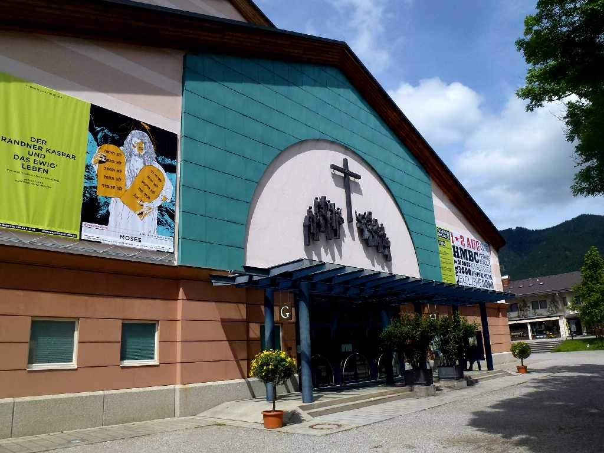
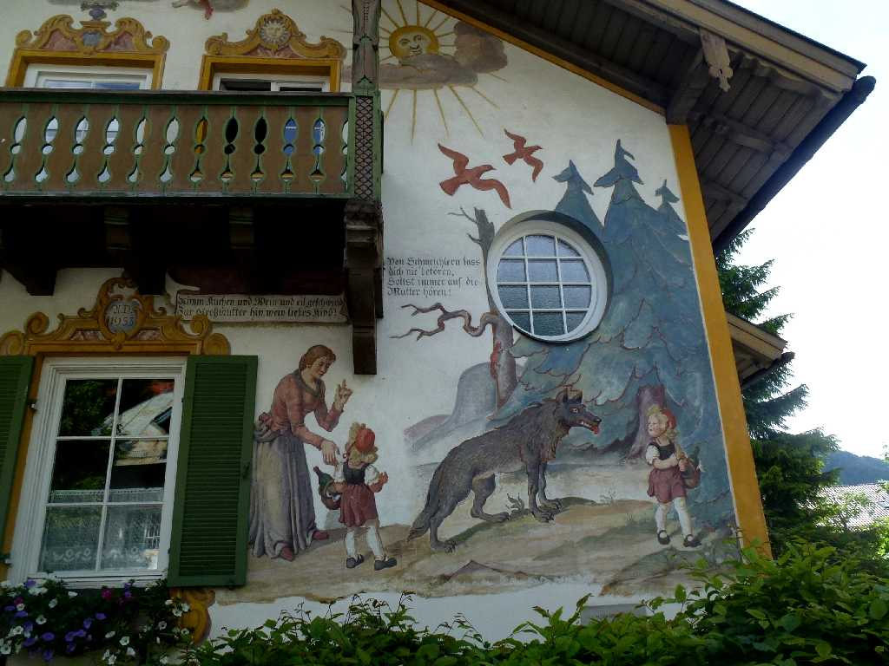
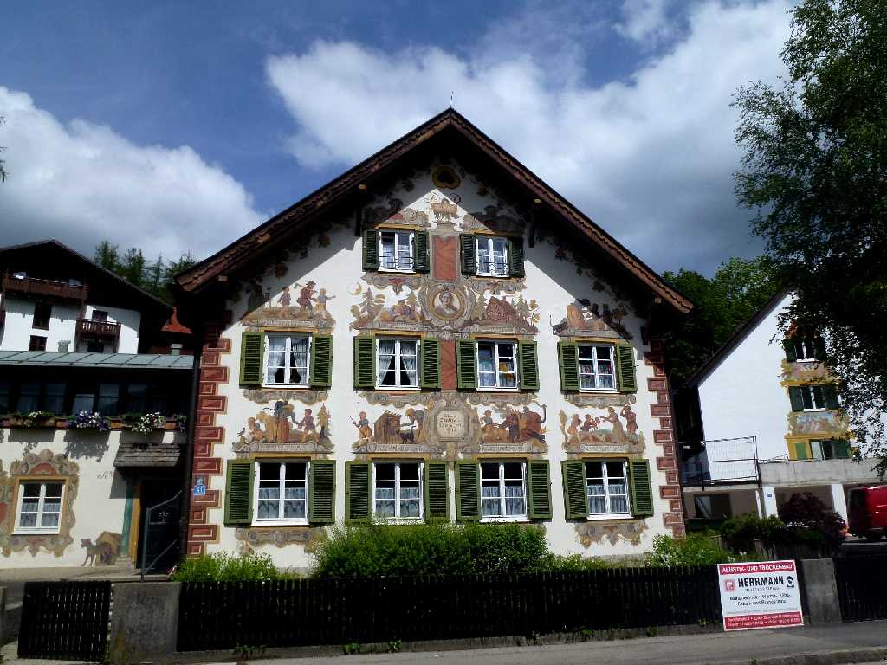
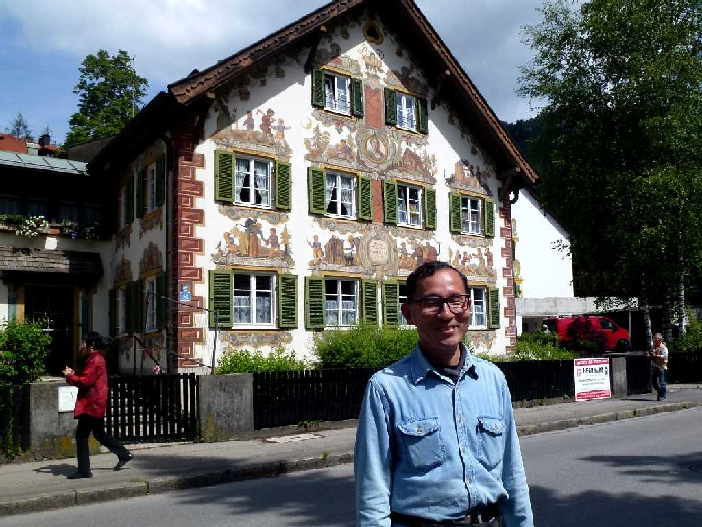

Passionsspielhaus Oberammergau
オーバーアマガウのキリスト受難劇を上演する劇場 ペストが猛威をふるった中世に被害が少なかったことに感謝し捧げた受難劇を村人総出で行う

Rotkäppchenhaus
壁に綺麗なフレスコ画を描いた赤ずきんちゃんの家

Hänsel und Gretel Haus
ヘンデルとグレーテルの家
Bremen Mizikacilari Haus
ブレーメンの音楽隊の家

June 5 2014 Oberammergau